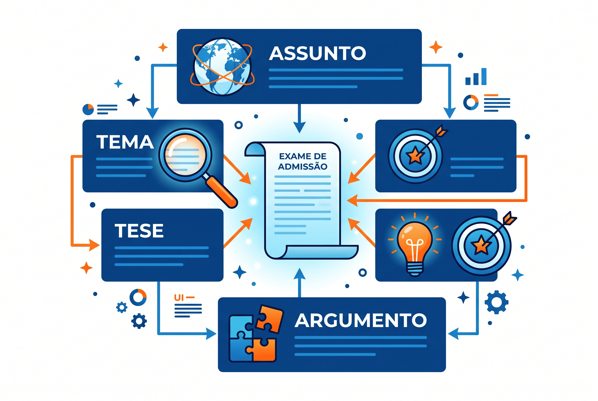

Como encontrar o tema e a tese de qualquer texto: passo a passo para provas
Saber como encontrar o tema e a tese de um texto é, sem dúvida, a competência número um exigida no ENEM, em vestibulares rigorosos (como o PAES UEMA) e em concursos públicos. Se você erra a identificação da tese, a probabilidade de errar toda a questão de interpretação textual é altíssima.
Um dos erros mais comuns dos candidatos é confundir sobre o que o texto fala (o assunto/tema) com o que o autor pensa sobre aquilo (a tese/ideia principal). As bancas examinadoras conhecem essa dificuldade e criam alternativas que misturam propositalmente esses conceitos para testar sua leitura crítica.
Neste conteúdo, vamos desatar esse nó conceitual. Você aprenderá a diferenciar definitivamente assunto, tema, tese (ideia principal) e argumento central, além de conhecer um método prático para localizar cada um desses elementos em qualquer texto. Ao final, resolva nosso quiz avançado para consolidar o aprendizado.

A diferença entre Assunto e Tema
A confusão começa logo na base. Embora sejam usados como sinônimos no dia a dia, na análise do discurso e na interpretação textual, assunto e tema têm abrangências totalmente diferentes.
Assunto (O Todo)
É a área geral de interesse do texto. É amplo, genérico e costuma ser expresso em uma única palavra ou expressão curta. O assunto não aponta uma direção específica.
Exemplo: Educação.
Tema (O Recorte)
É a delimitação do assunto. É um recorte específico, direcionado e mais restrito. O tema define exatamente qual aspecto do assunto geral será abordado.
Exemplo: Os desafios da educação inclusiva para autistas no Brasil.
Cuidado nas alternativas
Muitas alternativas incorretas tentam resumir o texto apresentando apenas o "assunto" de forma muito ampla (generalização) ou restringindo demais o tema. A alternativa correta sobre o tema deve abarcar a delimitação exata proposta pelo autor.
O que é a Tese e a Ideia Principal?
Uma vez que você sabe *sobre o que* o texto fala (o tema), é hora de descobrir *o que o autor defende* sobre isso. É aqui que entram a tese e a ideia principal.
- Ideia Principal: É a mensagem central de textos narrativos, descritivos ou expositivos. É o resumo da informação mais importante que o autor quer transmitir, sem necessariamente tentar convencer o leitor de algo.
- Tese: É a "ideia principal" dos textos argumentativos (como artigos de opinião, editoriais e redações do ENEM). A tese é um posicionamento, um julgamento, uma opinião defendida pelo autor. Ela sempre pode ser contestada ou debatida.
O teste da contestação
Para saber se uma frase é a tese de um texto, pergunte-se: "Alguém poderia discordar disso?". Se a resposta for sim, você encontrou a tese. A tese é opinativa, nunca é apenas um fato neutro.
O que é o Argumento Central?
Se a tese é a opinião, o argumento central é o "porquê". É a justificativa principal, a prova ou o raciocínio mais forte que o autor utiliza para sustentar a sua tese e convencer o leitor.
A hierarquia da argumentação
- Assunto: O universo do texto.
- Tema: A parte do universo escolhida.
- Tese: A opinião do autor sobre essa parte.
- Argumento Central: O principal motivo que valida a opinião do autor.
Exemplo prático de análise
Vamos aplicar os quatro conceitos em um pequeno texto simulando um artigo de opinião cobrado em vestibulares como o PAES UEMA ou concursos:
"O avanço das inteligências artificiais na sociedade moderna é inegável. No entanto, a substituição acelerada de trabalhadores humanos por sistemas automatizados, sem uma política de transição justa, representa um risco brutal para a estabilidade social. Isso ocorre porque o desemprego em massa nas classes menos especializadas gerará um abismo de desigualdade irreversível a curto prazo."
- Assunto: Inteligência Artificial / Tecnologia.
- Tema: A substituição de humanos por IAs no mercado de trabalho.
- Tese: A automação acelerada e sem planejamento é um risco brutal para a estabilidade social. (Veja o posicionamento e os adjetivos fortes: "risco brutal").
- Argumento Central: O desemprego em massa dos menos qualificados causará uma desigualdade irreversível. (É o porquê da tese ser verdadeira).
Método prático: como localizar o tema e a tese na hora da prova
Encontrar esses elementos rapidamente economiza tempo e evita que você caia nas armadilhas de extrapolação e redução (muito comuns no ENEM e na FGV). Siga este roteiro:
| Elemento | Onde e como procurar no texto |
|---|---|
| Tema | Leia o título (se houver), o primeiro parágrafo e a fonte/referência bibliográfica. O tema costuma ser apresentado logo na introdução para situar o leitor. |
| Tese | Busque por marcas de opinião: adjetivos valorativos (essencial, perigoso, fundamental), advérbios de modo (infelizmente, indiscutivelmente) e verbos em primeira pessoa ou imperativos. Geralmente está no final da introdução ou no parágrafo de conclusão. |
| Argumentos | Busque conectivos explicativos e causais: porque, visto que, já que, uma vez que, devido a. Eles introduzem as justificativas da tese. |
Quiz sobre Tema, Tese e Argumento
Questões de fixação — Nível Avançado
Questão 1 — Em um texto sobre "Os impactos do uso de smartphones na primeira infância", o autor afirma: "A exposição precoce às telas prejudica o desenvolvimento cognitivo infantil, pois inibe a imaginação e reduz a interação motora com o mundo real."
A oração "A exposição precoce às telas prejudica o desenvolvimento cognitivo" exerce a função de:
Questão 2 — Qual a principal diferença estrutural entre o TEMA e a TESE em um artigo de opinião cobrado no ENEM?
Questão 3 — Leia o fragmento: "A mobilidade urbana é um dos maiores gargalos das metrópoles contemporâneas. (1) O investimento exclusivo em malha viária para carros particulares é um erro estratégico gravíssimo (2), uma vez que o espaço urbano é finito e a frota de veículos cresce exponencialmente (3)."
Os trechos numerados como 1, 2 e 3 correspondem, respectivamente, a:
Questão 4 — Para não confundir Tese com Argumento na prova de vestibular (como o PAES UEMA), o candidato deve procurar por articuladores (conectivos). Qual grupo de conectivos costuma introduzir o ARGUMENTO que sustenta a tese?
Questão 5 — Se uma alternativa de prova diz "O texto trata exclusivamente sobre política", sendo que o texto fala sobre a "corrupção nos governos municipais", essa alternativa pode ser eliminada porque:
Resumo: separando os elementos do texto
- Assunto: A área geral de interesse (Ex: Saúde).
- Tema: O recorte específico do assunto (Ex: A importância da vacinação infantil).
- Ideia Principal: O foco central da informação transmitida em textos não argumentativos.
- Tese: A opinião, o ponto de vista ou o julgamento crítico do autor sobre o tema.
- Argumento Central: As provas, dados ou raciocínios causais utilizados para justificar a tese.
- Na hora da prova, faça três perguntas: "Do que trata?" (Tema), "O que ele acha disso?" (Tese), "Como ele prova isso?" (Argumento).
Conclusão
Encontrar o tema e a tese de um texto não é um dom, é uma técnica de leitura ativa. As bancas de vestibulares (como a UEMA) e o INEP (no ENEM) exigem que o aluno seja um leitor crítico, capaz de mapear a estrutura argumentativa do texto antes mesmo de ler o enunciado das questões.
Ao separar o assunto geral da delimitação do tema, e diferenciar o posicionamento do autor (tese) das justificativas que o sustentam (argumentos), você constrói uma barreira intransponível contra as "pegadinhas" e alternativas distratoras da prova.
Perguntas frequentes sobre Tema e Tese
Por que não posso confundir assunto e tema na prova?
Porque as bancas usam a generalização como ferramenta de erro. Se o texto fala sobre "reciclagem de lixo eletrônico" (tema), uma alternativa que diz que o texto fala apenas sobre "meio ambiente" (assunto) será considerada incorreta por ser ampla demais e não resumir o foco exato do autor.
Todo texto possui uma tese?
Não. A tese é exclusiva de textos opinativos e argumentativos (artigos de opinião, dissertações, editoriais). Textos narrativos (contos), descritivos ou estritamente informativos (notícias) possuem uma ideia principal, mas não defendem uma tese.
Onde a tese geralmente fica localizada no texto?
Na estrutura clássica da dissertação, a tese é apresentada no final do primeiro parágrafo (introdução) e é reafirmada no último parágrafo (conclusão). Contudo, em artigos jornalísticos, ela pode estar diluída ao longo do texto, marcada por adjetivos valorativos.
Como os conectivos ajudam a achar os argumentos?
Conectivos de explicação e causa, como "porque", "pois", "visto que" e "na medida em que", funcionam como placas de sinalização indicando que o autor vai, naquele exato momento, justificar e provar a sua tese.
Continue estudando Interpretação Textual
Referências
- FIORIN, José Luiz. Argumentação. São Paulo: Contexto.
- FIORIN, José Luiz; SAVIOLI, Francisco Platão. Para entender o texto: leitura e redação. São Paulo: Ática.
- KOCH, Ingedore Grunfeld Villaça; ELIAS, Vanda Maria. Ler e compreender: os sentidos do texto. São Paulo: Contexto.
- MARCUSCHI, Luiz Antônio. Produção textual, análise de gêneros e compreensão. São Paulo: Parábola Editorial.
Explore Outros Conteúdos
Continue seus estudos acessando outras seções do site Mestre Kira: